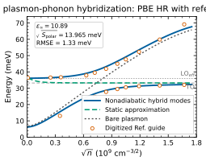
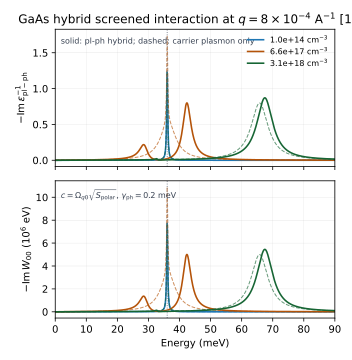

Result Catalog
One row per public-safe piece of work. Raw QE, DFPT, Wannier, RPA-grid, PDF, and scheduler outputs remain local and are not published.
| Item | Type | Date | Status | Key result / summary | Link |
|---|---|---|---|---|---|
| PBE HR + reference $\epsilon_\infty$ Fig. 1 | Result | 2026-05-31 | Production | Uses the refit PBE Wannier Hamiltonian, PBE Born/TO data, and reference $\epsilon_\infty=10.89$ consistently in RPA and polar coupling. All $81/81$ PPM rows fit; guide RMSE is $1.326$ meV. | Open figures → |
| Hybridized response and dielectric workflow | Theory | 2026-05-31 | Complete | PDF-derived formulas for $\delta\chi^0$, $\epsilon_{\rm el}^{-1}$, plasmon-pole fitting, the hybrid dynamical matrix, and $-{\rm Im}\epsilon_{\rm pl-ph}^{-1}$. | Open workflow → |
| Supplement RPA dielectric notes | Theory / implementation | 2026-05-23 | Complete | Records the RPA response function, overlap treatment, Coulomb kernel, PPM fit interface, static approximation, and GaAs/TiO2 numerical settings from the supplement. | Open RPA notes → |
| Long-range polar coupling | Method | 2026-05-24 | Complete | Documents the Born-charge/eigenvector polar coupling path and the SI nonanalytic-dynamical-matrix cross-check against the LO-TO splitting. | Open coupling notes → |
| Direct Fig. 1 gate | Validation | 2026-05-24 | Complete | Defines the accepted direct-Fig. 1 data path and rejects toy/surrogate provenance for production claims. | Open gate → |
| Hybrid screened interaction $W_{00}(q,\omega)$ | Result | 2026-05-31 | Complete | Computed the long-range macroscopic $W_{00}^{\rm pl-ph}$, $\epsilon_{\rm pl-ph}^{-1}$, and loss function for representative densities using the current PBE HR + reference $\epsilon_\infty$ PPM table. | Open result → |
Legend: Production headline result Complete done Planned not yet run.
Executive Summary
The most recent diagnostic isolates the high-density discrepancy of the full-PBE curve mainly to dielectric screening: using PBE $\epsilon_\infty=17.923182183$ leaves the upper branch low at high density, while replacing only the background dielectric constant by the reference value brings the branch guide RMSE to roughly $1.3$ meV.
Method at a Glance
The reproduction path follows the paper's separation of carrier screening and polar phonons:
For Fig. 1-like GaAs branch energies, the decisive phonon-side input is the analytic long-range polar coupling from Born charges, $\epsilon_\infty$, phonon eigenvectors, masses, and cell volume. The short-range EPW electron-phonon vertex is not needed for those branch energies.
Key Figures
Figures are small public-safe SVG/PNG artifacts copied under docs/assets/. Raw data behind them are not published.




Reproducibility Notes
| Component | Current setting / result | Notes |
|---|---|---|
| Python environment | ml anaconda/2024.02-py311, conda activate Tmat | Used for local analysis and figure generation. |
| QE environment | module reset; aocc/3.1.0; openmpi/4.1.6; AMD BLIS/libFLAME/libM; fftw | QE directory is /anvil/projects/x-che190065/rjguo/qe-7.5. |
| CPU policy | Use 128 CPUs unless the task is truly tiny. | Matches the current HPC workflow preference. |
| GaAs q point | $|q|=8\times10^{-4}$ Angstrom$^{-1}$ along $[110]$ | Paper Fig. 1 geometry. |
| Temperature | $T=300$ K | Used in the paper's carrier occupations. |
| Reference dielectric rerun | $\epsilon_\infty=10.89$ | Used consistently in RPA Coulomb kernel and long-range polar coupling denominator. |
| Hybrid $W_{00}$ postprocessing | $U_q=5.7480\times10^5$ eV; $\gamma_{\rm ph}=0.2$ meV for visualization | Local CSV stays under dft/gaas/fig1_pbe_reference_eps/; only the small SVG summary is published. |
Warnings: Files Not Published
This GitHub Pages artifact intentionally publishes only compact derived notes and figures. It excludes raw or large research data and credentials.
| Class | Policy |
|---|---|
| Paper PDFs and supplemental PDFs | Excluded; pages contain derived summaries and formulas only. |
QE wavefunctions, *.save/, charge density, large raw output | Excluded as large HPC data. |
Dense numerical arrays *.npy/*.npz/*.h5/*.dat | Excluded; summarized in tables and small figures only. |
Scheduler logs *.out/*.err/*.log | Excluded. |
| Private keys, tokens, local credentials | Excluded and never printed. |